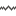

Sparkline Column
A sparkline column visualizes the variation in summary values over time.

Data Binding Specifics
The sparkline column is bound to a measure providing sparkline values and to a dimension providing a date-time interval.

Sparkline Options
You can control sparkline appearance settings using the Column Options dialog. To invoke this dialog, click the column type indicator ().

In this dialog, you can control various settings that affect how the sparkline is displayed within a grid cell.

| Sparkline Options | Description |
|---|---|
| Show start/end values | Species whether or not to display sparkline start/end values within a grid cell. |
| Sparkline view type | Defines the view type of a sparkline. Sparkline view types include Line, Area, Bar, and Win/Loss. |
| Highlight min/max points | Specifies whether or not to highlight the minimum/maximum points of a sparkline. |
| Highlight start/end points | Specifies whether or not to highlight the start/end points of a sparkline. |